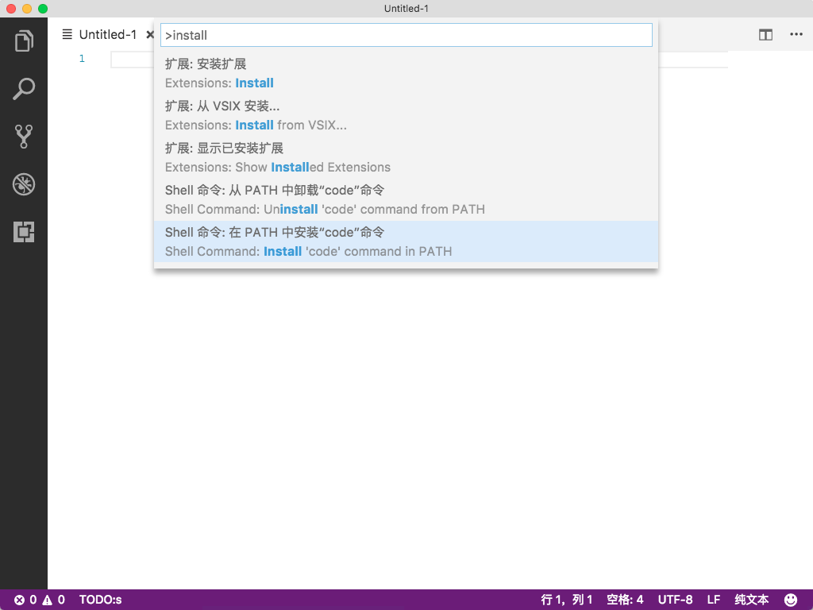

vscode
比起 sublime text 或者 atom,我更推荐使用的 vscode 文本编辑器,配合插件 Settings Sync 进行插件和配置的同步,很适合我多个平台多个电脑的进行同步,使用同一套习惯.
插件丰富,我也贡献了一个给文件头部添加更新内容的插件,当然也要支持自己的啊!
https://marketplace.visualstudio.com/items?itemName=mikey.vscode-fileheader
下载
打开官网下载自己合适的平台就可以了.
官网: https://code.visualstudio.com/
配置同步
安装同步插件 Settings Sync必装,它是通过 github 提供的 gist 服务进行同步,所以必须要有 github 的账号.
使用
按 F1 输入 sync,会让你输入github 的 token 和 gist 的 id, 没有的话就按照提醒进行申请.
几个配置说明
sync: Download Settings 下载配置
sync: Update / Upload Settings 上传配置
插件推荐
下面这个是我使用的插件,用同步插件同步后有结果的显示,就是下面的.
Align - Version :0.2.0
auto-close-tag - Version :0.3.10
auto-rename-tag - Version :0.0.11
autofilename - Version :0.1.3
autoimport - Version :1.2.2
changeEncode - Version :0.0.8
code-settings-sync - Version :2.6.2
githistory - Version :0.2.0
html-snippets - Version :0.1.0
intelligence-change-case - Version :1.1.0
JavaScriptSnippets - Version :1.4.0
join-lines - Version :0.2.2
jquerysnippets - Version :0.0.1
json-tools - Version :1.0.2
qiniu-fig-bed - Version :0.0.5
vscode-fileheader - Version :0.0.2
vscode-html-css - Version :0.0.36
vscode-icons - Version :7.5.1
vscode-react-native - Version :0.3.2
vscode-todo - Version :0.8.0
安装 code 到环境变量中
将 vscode 添加到环境变量中,在终端就可以执行 code 命令.
按 F1 输入 install,选择 Shell 命令: 在 PATH 中安装 code 命令

注:
安装成功后,可以把 iTerm 中使用的 vi 换成 code 了.